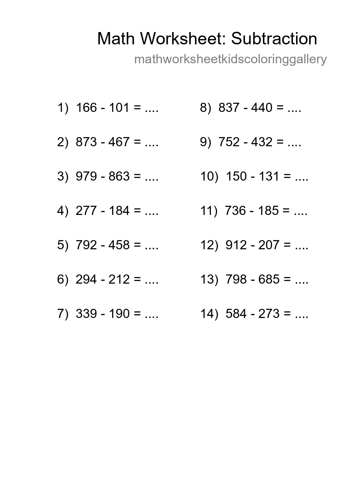
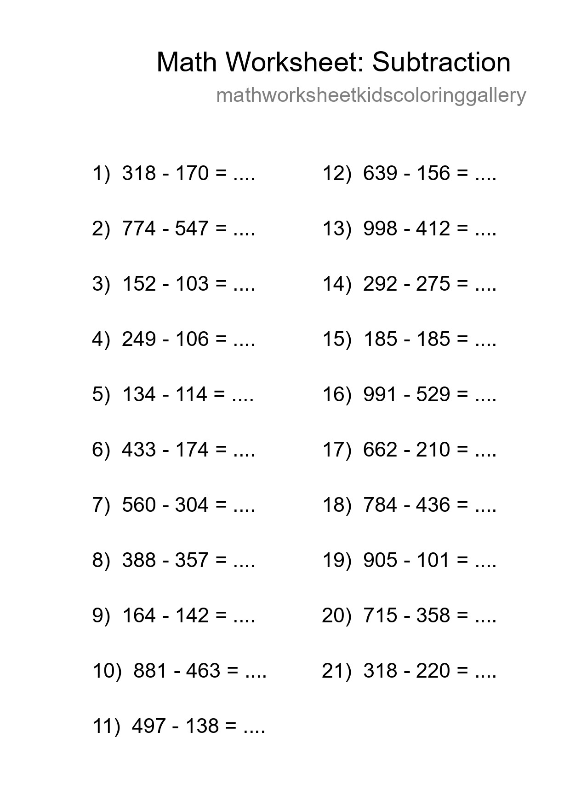
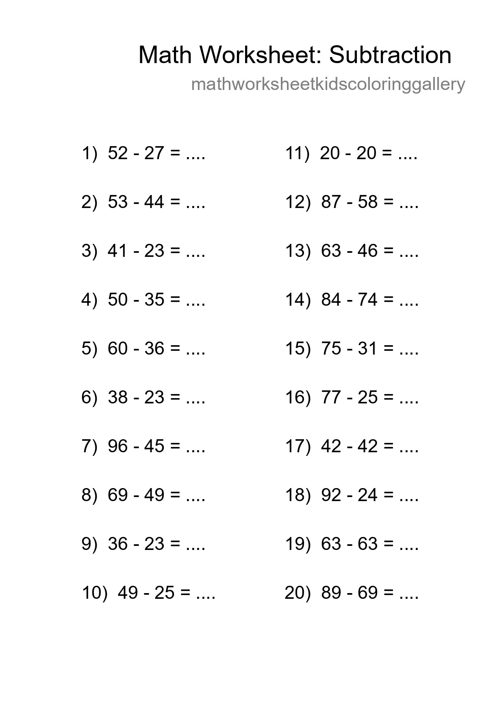
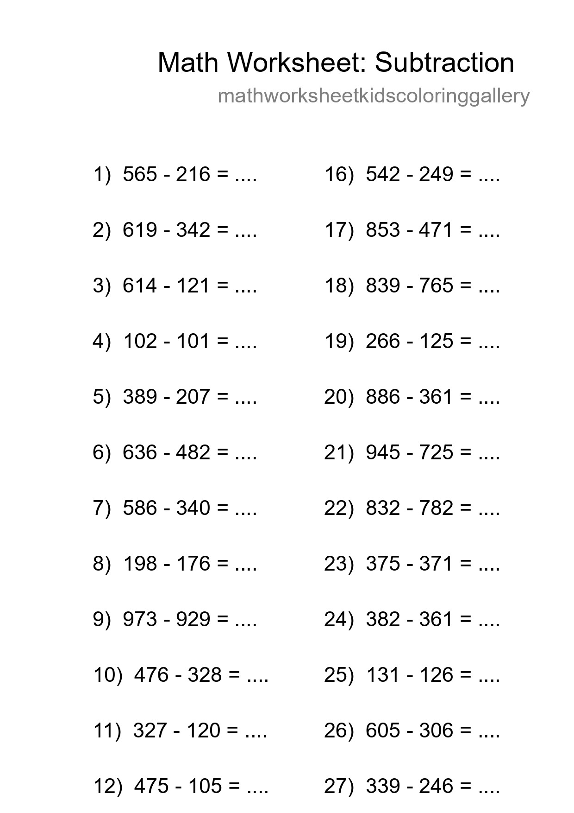
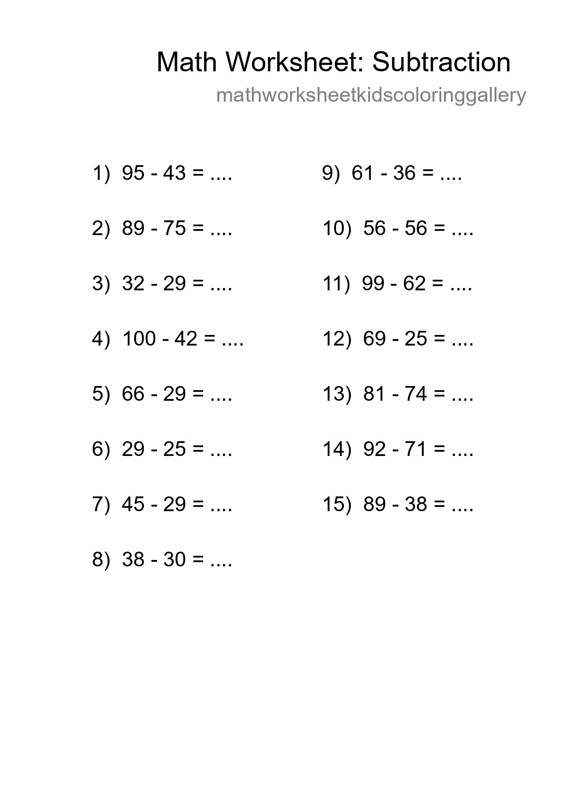
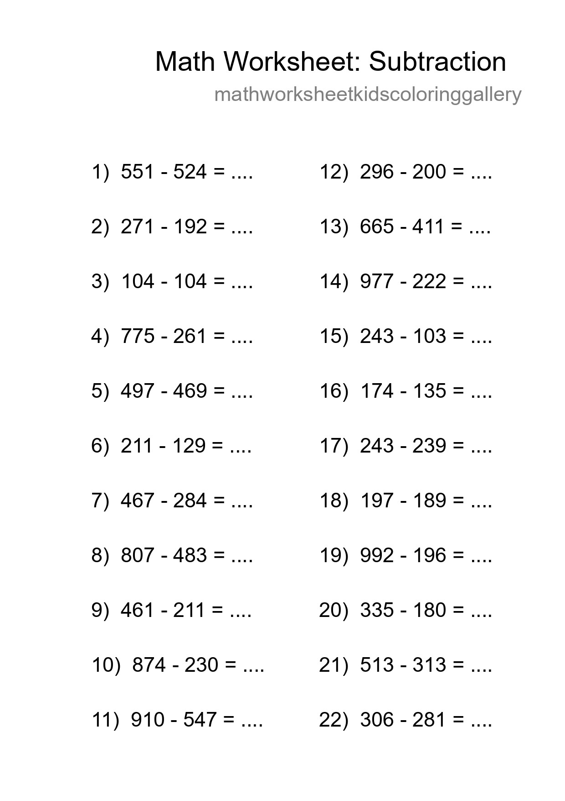
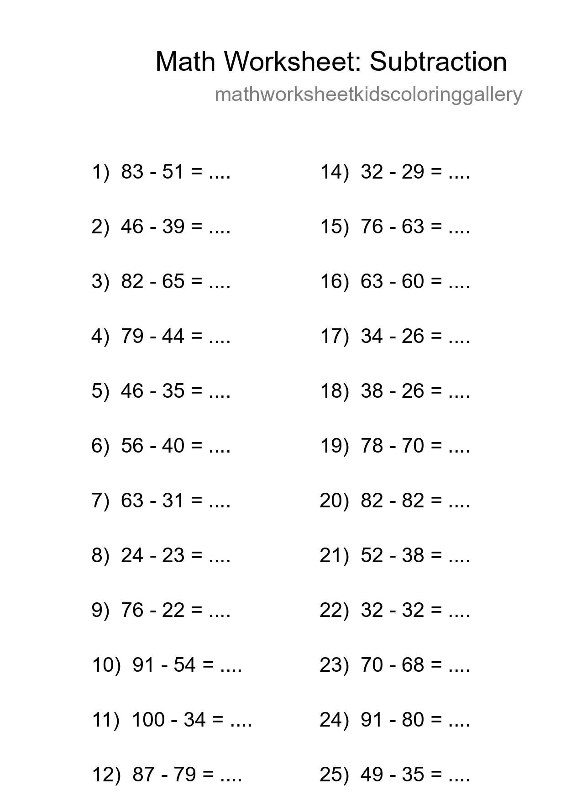
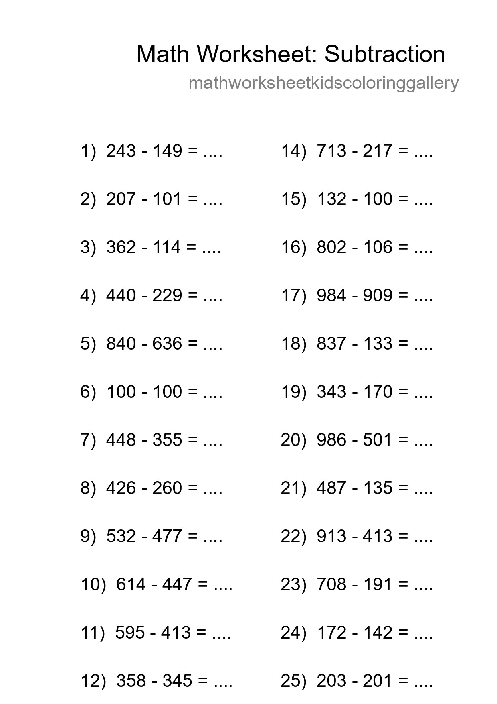

Printable Free 14 Subtraction Math Worksheet For Grade 5 - Part 9

Free 21 Subtraction Math Worksheet For Grade 5 - Part 21

Free 20 Subtraction Math Worksheet For Grade 3 With Answers - Part 33

Grade 5 Subtraction Practice Worksheet (30 Problems) - Part 45

Free 15 Subtraction Math Worksheet For Grade 3 - Part 57

Free 22 Subtraction Math Worksheet For Grade 5 With Answers - Part 69

Printable Free 26 Subtraction Math Worksheet For Grade 3 - Part 81

Free 25 Subtraction Math Worksheet For Grade 5 - Part 93

Printable Free 15 Subtraction Math Worksheet For Grade 3 - Part 105

Free 11 Subtraction Math Worksheet For Grade 2 - Part 117

Free 14 Subtraction Math Worksheet For Grade 2 - Part 129

Grade 2 Subtraction Practice Worksheet (21 Problems) - Part 141

Grade 5 Subtraction Practice Worksheet (23 Problems) - Part 153

Printable Free 10 Subtraction Math Worksheet For Grade 5 - Part 165

Free 19 Subtraction Math Worksheet For Grade 5 With Answers - Part 177